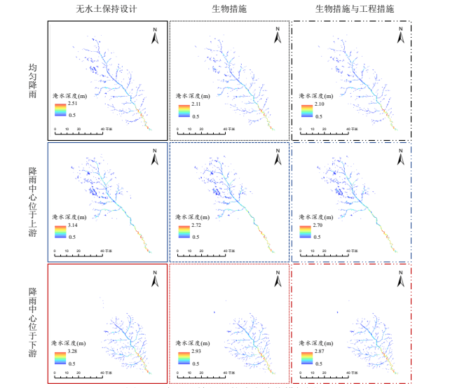

M.S. | 水工技師
北海道大学 大学院地球環境科学研究院 研究生
E-mail : nieqiyang@outlook.com

|
M.S. | 水工技師 北海道大学 大学院地球環境科学研究院 研究生 E-mail : nieqiyang@outlook.com |
|
2020年から2023年まで、中国三峡集団上海設計研究院で水工技師として勤務し、 主砂防におよび環境関連の設計、評価、監視業務に従事していました。
令和二年に長安大学で修士号を取得しました。
私の研究は主に水文シミュレーションに焦点を当てています。現在、私は Environmental Fluid Dynamics Code (EFDC)を他の分散型水文モデルと 結合して、流域内の水環境を評価しています。
PS. 以前のFortranコードをPythonに変換する作業は一時的に中断しています。Pythonを使用して元の Fortranモデルの計算結果の後処理を強化することが、より効率的な選択だ と考えています。

|
中国黄土高原地域におけるLUCCによって引き起こされる潜在的な非点源汚染の時空間変動とリスク特性
Jiqiang Lyu, Yuanjia Huang, Qiyang Nie, et al.
|

|
両側平均変化点法に基づくデジタル川網の閾値の描画-南苕溪流域を例として
NIE Qiyang
|

|
灞河流域の土地利用変化に影響を受ける非点源汚染リスクの時空間変動
NIE Qiyang, Lyu Jiqiang, et al.
|

|
発明特許: 都市河川ゴムダム群の水生態調整方法
Lyu Jiqiang,NIE Qiyang, Xue Qiang, et al.
|

|
"高解像度DEMおよびDOMデータに基づく浸食予測と評価のためのデジタルソフトウェアの開発。"
研究代表者
|

|
中国北西部の黄土高原における気候と人間活動の洪水災害への影響
主要参加者
|
|  |
都市雨水ビッグデータ早期警戒メカニズム、資源利用理論、および海綿都市デザイン手法
参加者
|

|
変動環境下の黄土高原での流出変動メカニズムの研究
参加者
|
[ 連絡先をお知らせください ], [ GitHub ], [ Research Map ]